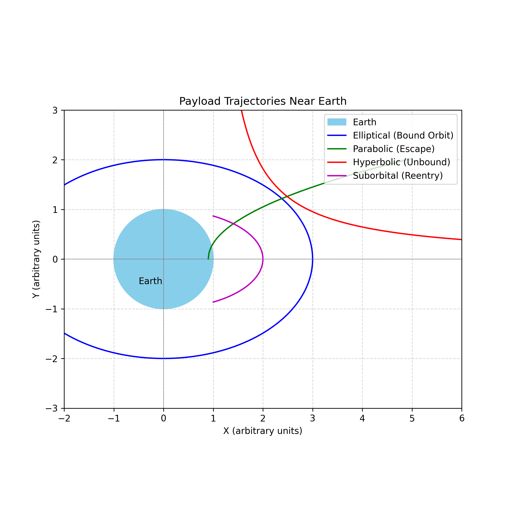

Problem 3
Trajectories of a Freely Released Payload Near Earth
Task 1: Analyze the Possible Trajectories of a Payload Released Near Earth
When a payload is released from a rocket near Earth, its trajectory depends primarily on its initial velocity vector and position relative to Earth’s center. These trajectories can be classified according to the total mechanical energy (E) of the system and the shape of the resulting path, which corresponds to a conic section.
1. Elliptical Trajectory
- Condition: Total energy \( E < 0 \)
- Speed: Less than escape velocity \( v < v_{esc} \)
- Shape: Ellipse
- Nature: Bound orbit
- Examples:
- Satellites in low Earth orbit (LEO), medium Earth orbit (MEO), or geostationary orbit (GEO)
- Equation: [ \text{Semi-major axis: } a = -\frac{GM}{2E/m} ]
2. Parabolic Trajectory
- Condition: Total energy \( E = 0 \)
- Speed: Exactly escape velocity \( v = v_{esc} \)
- Shape: Parabola
- Nature: Marginal escape
- Examples:
- Hypothetical perfect escape path with no residual velocity at infinity
- Key Feature: Separates bound and unbound motion; transitional trajectory.
3. Hyperbolic Trajectory
- Condition: Total energy \( E > 0 \)
- Speed: Greater than escape velocity \( v > v_{esc} \)
- Shape: Hyperbola
- Nature: Unbound escape
- Examples:
- Interplanetary probes like Voyager or New Horizons
- Characteristic: Payload escapes Earth's gravity with residual speed.
4. Suborbital (Ballistic) Trajectory (Non-conic but relevant)
- Condition: Initial velocity too low for orbit
- Speed: \( v < v_{orb} \)
- Shape: Segment of an ellipse that intersects Earth
- Nature: Returns to Earth
- Examples:
- Reentry vehicles, sounding rockets
- Key Feature: The payload follows a curved path but lacks sufficient speed to remain in orbit.
Summary Table
| Trajectory Type | Energy \(E\) | Speed Condition | Nature | Shape |
|---|---|---|---|---|
| Elliptical | \(E < 0\) | \(v < v_{esc}\) | Bound | Ellipse |
| Parabolic | \(E = 0\) | \(v = v_{esc}\) | Marginal | Parabola |
| Hyperbolic | \(E > 0\) | \(v > v_{esc}\) | Unbound | Hyperbola |
| Suborbital | \(E < 0\) | \(v < v_{orb}\) | Bound | Arc/ellipse |
Visualizing Trajectories Near Earth
